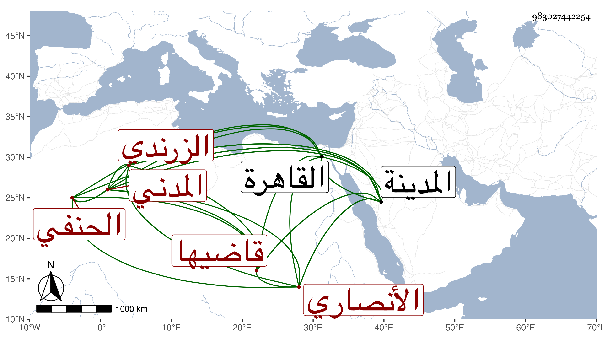

0902Sakhawi.DawLamic.ITO20230111-ara1.EIS1600.983027442254
Biography ID: 983027442254
941
سعد بن محمد بن عبد الوهاب بن علي بن يوسف سعد الدين بن فتح الدين أبي الفتح الأنصاري الزرندي المدني قاضيها الحنفي . سمع على أبي الفتح المراغي وولي قضاء الحنفية بالمدينة مع حسبتها بعد والده مع كونه عاريا من الفضائل لكن بعناية الأمين الأقصرائي ورسم بنيابة أخيه سعيد عنه لكونه كان إذ ذاك بالعجم فسد أخوه الوظيفة حتى جاء صاحب الترجمة ، وقدم القاهرة غير مرة منها وهو قاض في أيام الظاهر جقمق وشكا إليه دينه وانه ألف دينار فأنعم عليه بها بعد أن حاققه عن سبب تحمله الدين . مات عن بضع وستين في ربيع الثاني سنة ثمان وستين بالمدينة ولم يعقب سوى ابنة ماتت في سنة بضع وثمانين ، واستقر عوضه أخوه المشار إليه .
